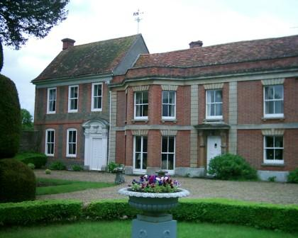
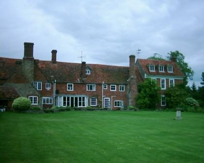

The Caudwells are an old distinguished family presently residing at The Manor, Drayton, Abingdon, Oxfordshire (1998). Matilda Louisa Sowdon (neé Hutton) married Thomas Caudwell upon the death of William Henry Sowdon (d 1869). Matilda and her three children, Harry Wilson, Louisa Catherine and Eleanor Matilda lived with Thomas at Drayton Manor. Matilda died on 30 Apr 1897 so Thomas remarried Bessie Sowden, housekeeper to Thomas and Matilda. Family diaries have it that Bessie was a designing woman who outlived her husband Thomas, he having taken his own life with a shotgun and she taking a third of his estate. Bessie and Thomas had one son, Archie.
Thomas Caudwell lived several years after his wife (Matilda Louisa) and married again a servant in his employ as housekeeper. It was a sad business. He was forced into this marriage by this designing woman - but could not face the disgrace. It is supposed that he committed suicide the day after his 2nd wedding, on 13 April 1899, for he was found with his brains blown out in his bedroom and his gun by his side and no one witnessed the act. It was an unfortunate affair for his family for his widow took a third of his estate and her child when born shared with the other children, he was supposed to have been a man of good property, but in haste to get rich the last years or so of his life he gambled heavily in stocks and shares and had invested his money in some very rotten securities, they were found to be of very little value and his children, after the law expenses were paid, did not receive a large sum each.
|
|
|
|
 Manor House (front), Drayton today 2007 |
 Rear of the Manor House, Drayton |
The Manor House, Drayton is still in the possession of the Caudwell family.